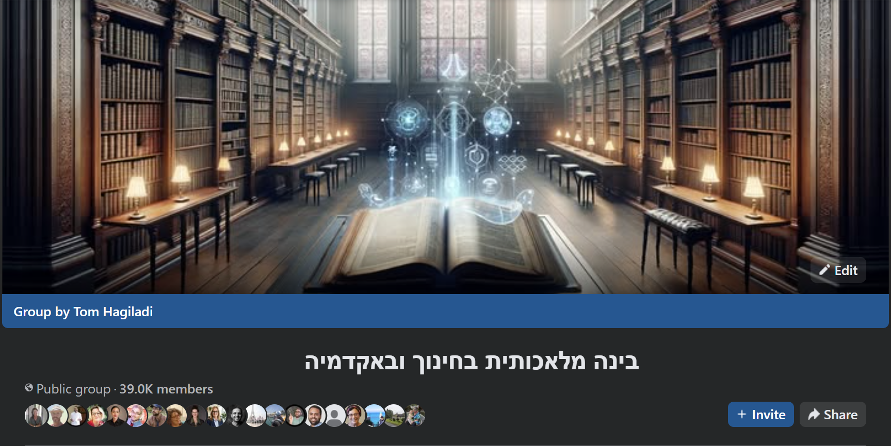
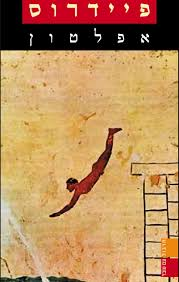
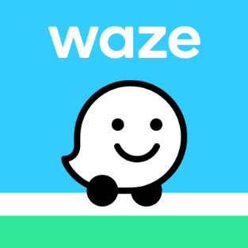

עשרים שנה כאיש חינוך, חלקן בניהול מערכות חינוך: הקמה וניהול בית הספר "שורשים", וסגן מנהל פסג"ה תל אביב-יפו
ובמדעני העתיד: אחראי הפן החברתי-רגשי
כמעט ארבע השנים האחרונות (מאז יציאת
ChatGPT):
רק הממשק שבין בינה מלאכותית ללמידה ולהוראה. כותב יחד עם פרופ' אמנון גלסנר את "אהבת למידה וחדוות גילוי", ומנחה את הפודקאסט "דיבורי בינה"
ומנהל את הקהילה "בינה מלאכותית בחינוך ובאקדמיה" בפייסבוק

מפת ההרצאה
ארבע תחנות
01 איפה אנחנו במהפכה
02 החשש: ניוון ומוטיבציה
03 ההבטחה: יוטגוגיה ולמידה אותנטית
04 מתיאוריה לפרקטיקה
איפה אנו נמצאים מבחינת התקדמות הטכנולוגיה
ומה זה אומר על הכיתה שלנו?
מאז 30.11.2022
כמה זמן עבר מאז שהגיע ChatGPT?
3שנים
10חודשים
20ימים
זמן קצר מאוד במונחים של מערכת חינוך.
ובזמן הזה, הכלי השתנה מהיסוד, פעמיים.
מה השתנה מאז
מצ'אט שעונה, לסוכן שמבצע
2023
שואלים ומקבלים
צ'אט שעונה על שאלות ומנסח טקסטים.
2025
כלים שמעבדים ומייצרים
מסכמים, מחפשים מקורות, ממפים ידע. ומייצרים תוצרים מוגבלים: תמונה, מצגת בינונית, שיר, סרטון קצר - ובדרך כלל לא טוב.
2026
סוכנים שעושים
יכולים לעשות כמעט כל מה שאדם מוכשר מאוד, עם התמצאות דיגיטלית על-אנושית, יכול לעשות על מחשב. ועוד.
המסקנה: הבינה לא רק "נמצאת". היא הולכת להשתלב באופן אינטנסיבי בכל היבט של חיינו, ובוודאי בכל היבט של הוראה, למידה והערכה.
השאלה כבר לא "איפה הכפתורים"
רוב המורים, וגם רוב התלמידים, כבר יודעים שיש מודל שפה שכותב, מסכם ומתכנן.
יש מובילים ויש מאחרים, אבל הם כבר בקצוות.
השיחה המשמעותית היום: איך עושים פדגוגיה משולבת בינה מלאכותית.
מצד המורים
לא עוד כלי שמייצר עוד מאותו הדבר, אלא דרך לחשוב על פדגוגיה חדשה, שלא הייתה אפשרית עד היום.
מצד התלמידים
להפוך את הבינה מטכנולוגיה שמעתיקים ממנה, לטכנולוגיה שחושבים ולומדים איתה.
תחנה שנייה
החשש
01 איפה אנחנו במהפכה
02 החשש: ניוון ומוטיבציה
03 ההבטחה: יוטגוגיה ולמידה אותנטית
04 מתיאוריה לפרקטיקה
מהשטח
מה נותר מתהליך ההערכה הטקסטואלי?
התלמידתכתוב לי עבודה על מחזור המים, עמוד וחצי, שתישמע כמו של תלמיד כיתה ח'.
הבינהבשמחה! הנה עבודה על מחזור המים: מבוא, שלבי המחזור, חשיבות המים לחיים, סיכום...
ולמחרת: העבודה מוגשת ומקבלת ציון טוב - ולעיתים רבות טוב יותר מעבודה מקבילה של תלמיד שלא השתמש בבינה מלאכותית.
מי ראה את זה השנה?
92
עבודה: מחזור המים
נכתבה על ידי בינה מלאכותית, לא נקראה
סוגיית הניוון: עוד מאותו הדבר, או סיפור חדש?

אפלטון, לפני 2,400 שנה: הכתב יביא שכחה, ויעניק "את מראית העין של החוכמה".

ואז: וייז, מחשבון וטלפון. שחררנו את הניווט, החישוב והזיכרון.
ספטמבר 2025: הכלי נפל, ומפתחים גילו שהם כבר לא יודעים לכתוב קוד לבד.
אז מה שונה הפעם?
אותו כלי, שני מסלולים
מסלול הקיצור
נכנסים כדי להיפטר מהר מהמטלה המעיקה
מבקשים תוצר
מעתיקים, ויוצאים
החשיבה נשארת בחוץ
מסלול החשיבה
נכנסים כדי ליצור תוצר משמעותי, שגדול מסך חלקיו: המוח האנושי והמוח הסיליקוני
הלוך ושוב, "זה טוב, זה לא, כאן אולי", עד שהתוצר באמת מספק
האדם מעורב לאורך כל הדרך, ותורם את מה שרק הוא יכול: שיפוט, ידע וכוונה
החשיבה מתעצמת
אותו כלי בדיוק. הכוונה שאיתה נכנסים לשיחה קובעת את המסלול.
המוטיבציה מכריעה
כשאין מוטיבציה ללמוד
הבינה = כלי עקיפה
כשיש מוטיבציה ללמוד
הבינה = מנוע צמיחה
הטכנולוגיה היא לא הבעיה. מוטיבציית הלומד היא המפתח לבעיית הניוון.
אז התפקיד שלנו: לבנות למידה שיש בה מוטיבציה.
תחנה שלישית
ההבטחה
01 איפה אנחנו במהפכה
02 החשש: ניוון ומוטיבציה
03 ההבטחה: יוטגוגיה ולמידה אותנטית
04 מתיאוריה לפרקטיקה
מה אנחנו מבקשים לפתח?
איננו מעוניינים בלומדים שמסתפקים בהפקת תשובות מהבינה,
אלא בלומדים שנעזרים בה כדי להתבונן, להסתקרן, ליזום, לשאול שאלות טובות, ולהחליט ולבחור כיצד ללמוד.
בהשראת פרופ' אמנון גלסנר
אמנות שאילת השאלות: הבינה כפיגום, לא כתסריט
לעורר סקרנות
"מה יכול להיות מעניין עבורי ללמוד, להבין או לברר על הנושא?"
"אילו שאלות מסקרנות אפשר לשאול על הנושא הזה?"
"מה בנושא עשוי להפתיע אותי, או לערער משהו שאני חושב שאני יודע?"
"אם אספר לך מי אני ומה מעניין אותי, אילו כיווני למידה יכולים להתאים לי?"
לנסח שאלה שמניעה למידה
"איזו שאלה תניע למידה עם גילוי והעמקה, ולא רק תשובה קצרה?"
"איך לנסח את השאלה שלי פתוח יותר, כך שלא תכוון לתשובה אחת?"
"מה אני רוצה להשיג: להבין, להסביר, ליצור, לפתור, להחליט?"
"מאיפה כדאי לי להתחיל, בלי לקבוע מראש את כל המסלול?"
לבחור דרך ומקורות
"בהינתן שאני לומד טוב כאשר..., אילו דרכי למידה יתאימו לי, ולמה?"
"מאילו סוגי מקורות כדאי להתחיל, ואילו לשמור להמשך?"
"אילו דרכים יש ללמוד את זה: קריאה, ניסוי, תצפית, יצירה, סימולציה?"
"איך אבדוק שהמקורות עונים על השאלה שלי, ולא רק קלים וזמינים?"
השיחה אינה על תחום הדעת
(content knowledge)
אלא על הלמידה עצמה: עליי כלומד, על העניין שלי בתחום, על מציאת הסקרנות, המוטיבציה והחיבור האישי לנושא. ומתוך השיחה הזו נכנסים לשיחה על תחום התוכן.
פוטוסינתזה: מ"תעתיקו את ההגדרה" לחקירה
פוטוסינתזה היא תהליך שבו הצמח משתמש באנרגיית השמש כדי להפוך פחמן דו-חמצני ומים לסוכר.
← תעתיקו למחברת
לפני
אחרי: התלמידים שואלים את הבינה, מתוך מה שמעניין אותםמה זה "פוטו"? ומה זה "סינתזה"?למה העלים ירוקים?מה יקרה לצמח בחושך?איך זה קשור לאוויר שאני נושם?
ועוד זווית, יצירתית ורעננהאיך זה מרגיש להיות מולקולת פחמן דו-חמצני שנכנסת לעלה?אם הייתי קרן אור שפוגעת בעלה, לאן הייתה הולכת האנרגיה שלי?מה היה קורה בעולם אם כל הצמחים היו שובתים ליום אחד?איך היה נראה ראיון עבודה עם כלורופיל?אילו הייתי ממציא עלה מלאכותי, מה הוא היה צריך לדעת לעשות?
המורה לא מעביר את ההגדרה. המורה מנחה את השיחה.
סרטון, שתי דקות
מראית עין של חכמה
מה התפקיד של בית הספר, כשהתשובות כבר חינמיות?
שיתוף בזוגות: שמונה שאלות מנחות (6 דקות)
שתפו זה את זה תהליך למידה אמיתי שעבר עליכם לאחרונה, מתוך רצון, סקרנות או צורך אישי. אין צורך לכתוב כלום.
1
הנושא
מה למדתם? מעשי או תיאורטי?
2
המוטיבציה
מה היה הגירוי הראשוני? צורך, סקרנות, תחביב?
3
עם מי
לבד? עם חברים? קהילה? מנטור? קורס?
4
המקורות
בינה מלאכותית, יוטיוב, מאמרים, ניסוי וטעייה?
5
הזמן
בליץ אינטנסיבי, סופי שבוע, או לאורך תקופה?
6
ההתמדה
מה גרם לכם להמשיך?
7
ההפסקה
מה גרם להפסיק? מטרה הושגה? עניין דעך? אילוץ?
8
העדות
איך אתם יודעים שלמדתם? ואילו כתבתם על זה עבודה - האם היא הייתה משקפת את התהליך?